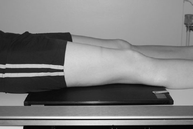

Femur(AP)
Centering point:Centre to the middle of the cassette, with the vertical central
ray at 90 degrees to an imaginary line joining both femoral
condyles

Cassette Size:43cm x 35cm (17 x 14 ins)
Portrait
Exposure Factors:70kVp on
16MaS
FFD:100cm
Bucky/Grid:No
Filter:No
Collimation:Centre: align the upper edge of the cassette to the level of the anterior superior iliac spines
Shutter A: to the full length (43 cm or 17 inches) of the cassette
Shutter B: within 1.25cm (half an inch) of the skin-line
Pathologies:Fractures, lesions
Position of patient and cassette
- The patient lies supine on the X-ray table, with both legs
extended
- The affected limb is rotated to centralize the patella over the
femur
- Sandbags are placed below the knee to help maintain the
position
- The cassette is positioned in the Bucky tray immediately under
the limb, adjacent to the posterior aspect of the thigh to include
both the hip and the knee joints
- Alternatively, the cassette is positioned directly under the limb,
against the posterior aspect of the thigh to include the knee
joint